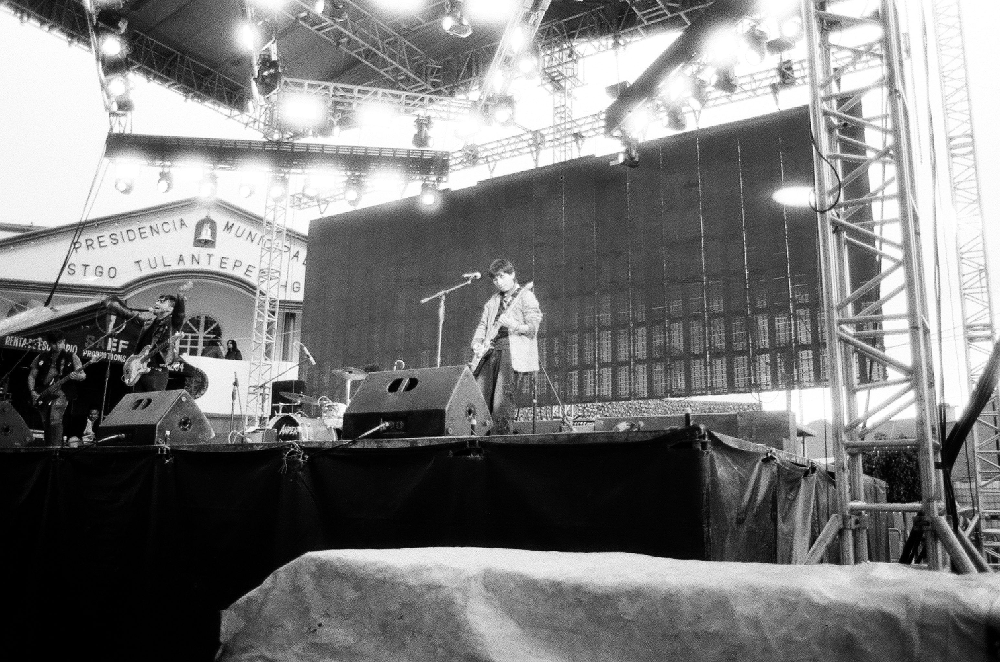

Bajo el radar: 28 de febrero del 2026
El evento "Bajo el Rdar" promete ser una fiestainolvidable para los amantes del punk/Rock dosmilero, destacando influencias del punk y happy punk en ingles y en nuestro idioma, este festival de la nostalgia, la musica, la tristeza, el sentimiento emo y el punk tendrá como anfitriones a la banda ANPER, quienes son amplios representantes de la escena artistica hidalguense, además de que sumara a más bandas que prometen poner al publico a bailar y llorar como cuando escuchabamos a PANDA, ALLISON, DIVISION MINUSCULA, SIMPLE PLAN, entre otras bandas que marcaron generaciones, pero eso no es todo ya que estas bandas también salvaran al PUNK NACIONAL a partir de letras y canciones originales!!!. IMPERDIBLE!!!

¿Quién es ese pxndxjx? inmersive music experience: 10 de marzo del 2026
¿Quien es ese pxndxjx? posiblemenete te hiciste esa pregunta cuando lo viste tocar por primera vez, pero tras una amplia trayectoria en los escenarios independientes de Hidalgo QEEP llega para sumergirnos en una experiencia auditiva totalmente inmersiva, ¿su unico requesito al publico? dejarse llevar por las sensaciones que su musica causara, un evento imperdible lleno de vida, música, nostalgia, mensaje social, vida y sobre todo arte, de la mano de uno de los artistas más versatiles en la historia moderna de México.